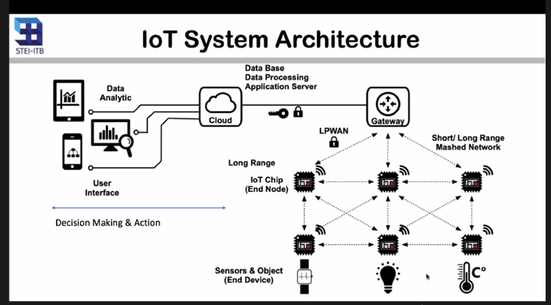

Deskripsi Event:

Webinar bertajuk “IoT Design and Innovations” ini akan mengundang Ketua KK Elektronika STEI ITB Prof. Trio Adiono, Ph.D. sebagai pembicara.
Prof. Trio mengatakan, IoT (Internet of Things) pada dasarnya diciptakan untuk memungkinkan pengguna dalam penggunaan dan pengoptimalan elektronik dan perangkat listrik yang diintegrasikan dengan internet. “Saat ini kita ada di revolusi 4.0 yang disebut cyber physical system. Artinya, hal-hal yang sifatnya fisik akan terhubung siber,” jelasnya.
IoT di Era Industri
Pada era industri ini juga terlahir teknologi lain seperti artificial intelligence (AI), robotika, dan virtual reality (VR). IoT sendiri butuh setidaknya empat unsur penggerak, di antaranya: internet, perangkat, penyimpanan berbasis cloud, dan sistem kendali mesin ke mesin. Semua komponen ini diperlukan untuk menampung jutaan data pengguna.
“Dengan adanya IoT, objek-objek fisik seolah-olah hidup dan memiliki kemampuan sensing, actuating, exchange information, decision maker, dan memberikan layanan,” kata Prof. Trio.
Lebih lanjut, Prof. Trio menerangkan, IoT pada pemanfaatannya harus memiliki nilai-nilai utama, yakni: efisiensi, kenyamanan, kemudahan, efektivitas, dan meningkatkan produktivitas. Apabila nilai-nilai itu tercapai, ia bisa melahirkan model bisnis, pelayanan, dan segmen pasar yang baru.
Arsitektur IoT
Arsitektur IoT terdiri atas tiga layer definisi. Layer pertama adalah perception layer berbentuk layer fisik. Ia mengontrol perangkat keras yang mampu mengonversikan informasi kepada sinyal listrik. Layer kedua adalah network layer, yaitu terjadinya proses transfer informasi pada sistem. Layer terakhir yaitu application layer, berupa service yang diberikan kepada pengguna.
22 November 2021
90 Peserta
32 November 2021
Online